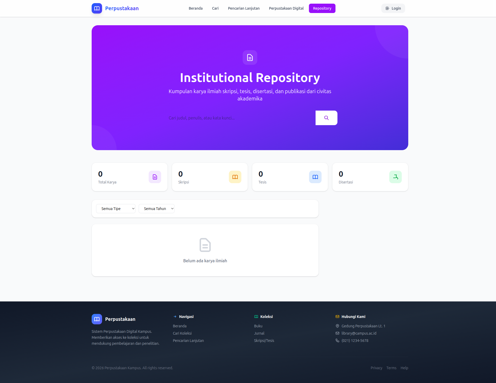

PANDUAN PENGGUNAAN APLIKASI PERPUSTAKAAN
Untuk Anggota Perpustakaan
Pendahuluan
Selamat datang di Aplikasi Perpustakaan Digital!
Aplikasi ini memungkinkan Anda untuk:
- 🔍 Mencari dan menelusuri koleksi buku secara online
- 📚 Meminjam buku fisik dari perpustakaan
- 📝 Mereservasi buku yang sedang dipinjam
- 📊 Memantau riwayat peminjaman Anda
- 📁 Mengakses perpustakaan digital (e-book, jurnal)
- 📦 Mengakses repository institusi (skripsi, tesis)
Fitur Publik (Tanpa Login)
OPAC - Pencarian Buku
OPAC (Online Public Access Catalog) adalah katalog online untuk mencari koleksi buku tanpa perlu login.

Gambar: Tampilan Halaman OPAC
Cara Mencari Buku
Langkah 1: Buka Halaman OPAC
Kunjungi https://library.tazkia.ac.id/opac
Langkah 2: Ketik Kata Kunci
Masukkan judul, penulis, atau kata kunci di kotak pencarian
Langkah 3: Klik Cari
Klik tombol Cari atau tekan Enter

Gambar: Tampilan Hasil Pencarian Buku
Hasil Pencarian Menampilkan:
- Judul buku - Judul lengkap buku
- Penulis - Nama penulis/pengarang
- Penerbit - Nama penerbit
- Tahun - Tahun terbit
- Status - Ketersediaan (Tersedia/Dipinjam)
Perpustakaan Digital
Perpustakaan Digital menyediakan akses ke koleksi digital seperti e-book, jurnal, skripsi, dan tesis.

Gambar: Tampilan Perpustakaan Digital
Menelusuri Koleksi Digital:
- Buka halaman Perpustakaan Digital
- Koleksi ditampilkan dalam bentuk grid
- Gunakan Filter untuk menyaring kategori dan tipe file
Membaca/Download File:
- Klik pada file yang diinginkan
- Pilih Preview untuk baca langsung di browser
- Atau pilih Download untuk simpan ke perangkat Anda
Repository Institusi
Repository menyimpan karya ilmiah mahasiswa, dosen, dan staf.

Gambar: Tampilan Repository Institusi
Mencari Dokumen:
- Buka halaman Repository
- Ketik judul, penulis, atau kata kunci
- Klik Cari
Login & Registrasi

Gambar: Halaman Login Aplikasi
Cara Login:
- Buka halaman Login
- Masukkan Email yang terdaftar
- Masukkan Password
- Klik tombol Masuk
Lupa Password?
Klik link "Lupa Password?" di halaman login untuk reset password.
Dashboard
Setelah login, Anda akan diarahkan ke Dashboard.
Dashboard memberikan informasi cepat:
- 📚 Buku Dipinjam - Jumlah buku yang sedang dipinjam
- 📅 Jatuh Tempo - Tanggal pengembalian paling dekat
- ⚠️ Terlambat - Jumlah buku terlambat (jika ada)
- 💰 Denda - Total denda yang harus dibayar (jika ada)
Peminjaman Saya
Lihat daftar buku yang sedang dan pernah Anda pinjam.
Mengakses Peminjaman Saya:
- Klik menu Peminjaman di sidebar
- Daftar peminjaman ditampilkan dengan tab:
- Aktif - Buku yang sedang dipinjam
- Riwayat - Buku yang sudah dikembalikan
Informasi Peminjaman Aktif:
- 📖 Judul Buku
- 📅 Tanggal Pinjam
- ⏰ Jatuh Tempo - Batas pengembalian
- 📍 Lokasi - Cabang perpustakaan
- 🔁 Jumlah Perpanjangan
- ⚠️ Status - Aktif / Terlambat
Memperpanjang Peminjaman:
- Buka halaman Peminjaman
- Cari buku yang ingin diperpanjang
- Klik tombol Perpanjang
- Sistem akan menghitung tanggal baru
Syarat Perpanjangan:
• Maksimal 2x perpanjangan
• Tidak ada anggota lain yang memesan
• Tidak terlambat mengembalikan
Reservasi Buku
Reservasi adalah memesan buku yang sedang tidak tersedia.
Membuat Reservasi:
- Cari buku yang ingin direservasi melalui OPAC
- Pastikan status buku "Dipinjam"
- Klik tombol Reservasi
- Sistem akan mengkonfirmasi
Status Reservasi:
- 🟡 Menunggu - Masih dalam antrian
- 🔵 Tersedia - Buku sudah kembali
- ✅ Selesai - Sudah diambil
- ❌ Dibatalkan - Reservasi dibatalkan
Batas Waktu Pengambilan: 3 hari setelah status "Tersedia". Jika tidak diambil, reservasi otomatis dibatalkan.
Profil Saya
Kelola informasi profil dan akun Anda.
Mengedit Profil:
- Klik foto profil di pojok kanan atas
- Klik Profil
- Klik Edit Profil
- Update informasi (nama, email, telepon, alamat)
- Klik Simpan
Mengubah Password:
- Buka halaman Profil
- Scroll ke bagian Password
- Masukkan password lama dan baru
- Klik Simpan
FAQ - Pertanyaan Umum
Tentang Peminjaman
Q: Berapa lama masa peminjaman?
A: Mahasiswa 7 hari, Dosen 14 hari, Staf 7 hari
Q: Apakah ada denda keterlambatan?
A: Ya, Rp 1.000 per hari per buku
Tentang Reservasi
Q: Berapa lama saya harus menunggu?
A: Tergantung peminjam sebelumnya, biasanya 7-14 hari
Bantuan & Kontak
📍 Perpustakaan Tazkia
📧 library@tazkia.ac.id
📞 (0352) 1234567
💬 0812-3456-7890
⏰ Jam Operasional:
Senin - Jumat: 08.00 - 16.00 WIB
Sabtu: 08.00 - 12.00 WIB
Terakhir diperbarui: 2 Februari 2026
Versi: 1.0
© 2026 Perpustakaan Tazkia. All rights reserved.